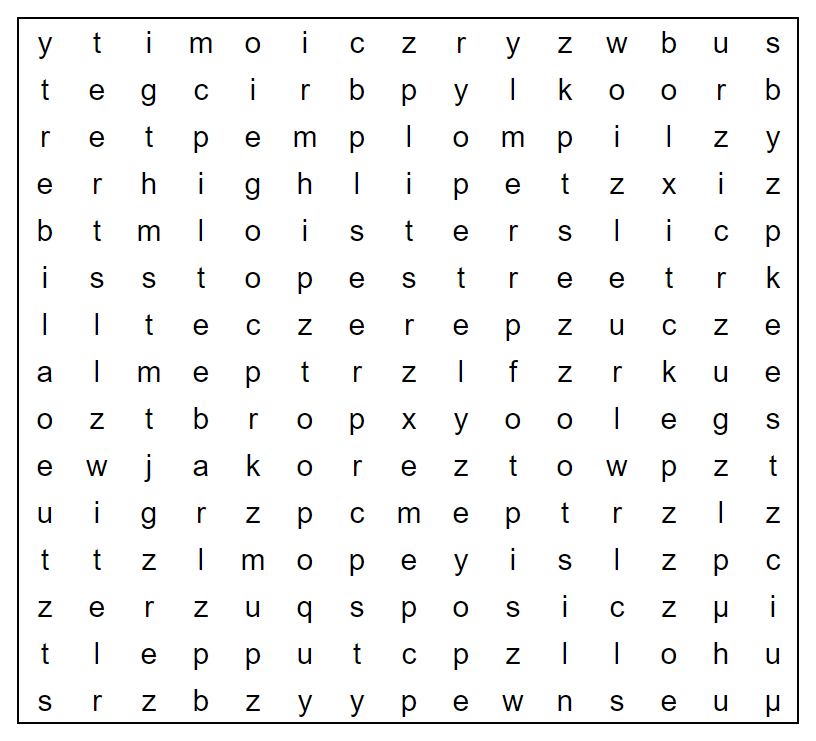

Oh no! The elves in charge of board games only managed to complete a couple of sets before they were distracted by playtesting the toys. Ho-ho-ho-w infuriating! [The answer to this puzzle is a single word.] (NOTE-ANDREW: Just try and see if you can start the puzzle and find some hidden clue, message, or instruction in the image.)

The Jane Street Puzzle Master has twenty-three errands (don't worry, almost all of them are tiny!) that she needs to cross off her to-do list (above) on her day off. If she can manage that small task, she plans to meet up with some friends tonight for a short while. Can you figure out where they'll meet up, and why? (NOTE-ANDREW: Again, you don't need to solve the entire puzzle. Just see if you can "see" a hidden clue, message, or instruction in the image.) 